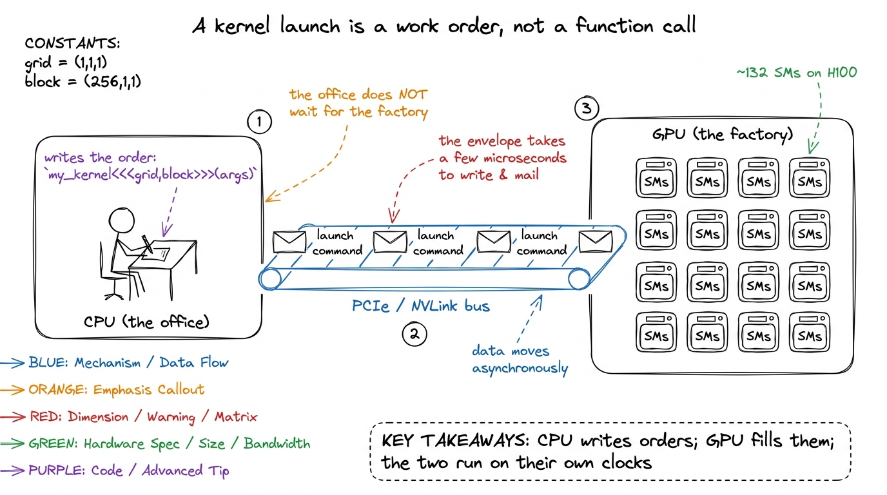
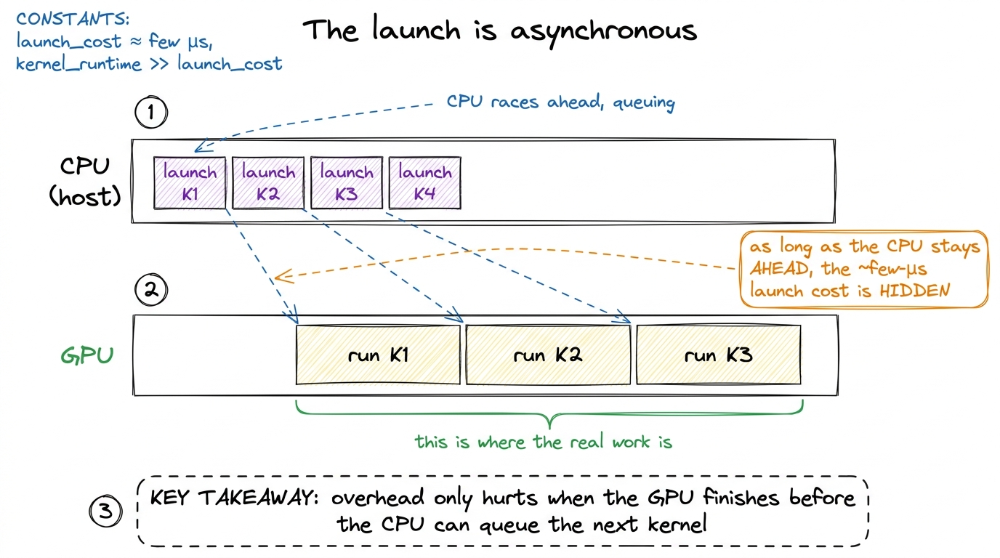
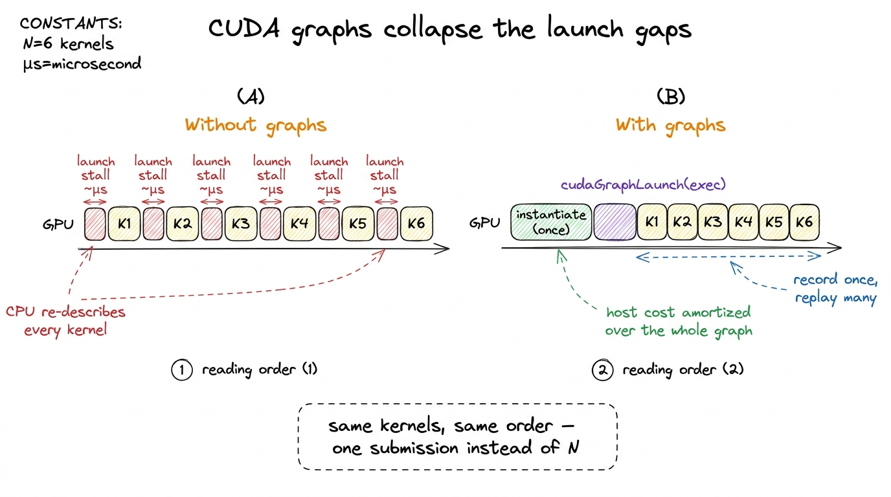

Anatomy of a kernel launch
Every kernel you will ever write goes through the same front door: three angle brackets. You type my_kernel<<<grid, block>>>(args), the line returns almost instantly, and somewhere on the other side of the PCIe bus a few thousand threads spring to life. That syntax is so compact it is easy to treat it as free — as if the launch were just a function call that happens to run on different silicon. It is not. Between your <<<>>> and the first instruction actually executing on the GPU sits a surprising amount of machinery, and that machinery has a fixed cost of a few microseconds that you pay whether the kernel does a billion flops or one. This article is about what happens in that gap, why it makes tiny operations overhead-bound, and how to make it disappear.
What the triple angle brackets actually mean
The launch syntax carries four things, three of which most people never touch:
my_kernel<<<gridDim, blockDim, sharedMemBytes, stream>>>(args...);gridDim and blockDim are the ones you always specify. They are dim3 values — up to three-dimensional — that describe the thread hierarchy. blockDim says how many threads live in one thread block (the group that is guaranteed to run together on a single Streaming Multiprocessor (SM) and can share memory and synchronize); gridDim says how many of those blocks make up the grid, the full launch. Inside the kernel, every thread reconstructs its own identity from blockIdx, blockDim, and threadIdx — exactly the blockIdx.y * blockDim.y + threadIdx.y arithmetic you saw in the naive GEMM kernel.
The constraints are hardware-dictated. A block can hold at most 1024 threads, because a block must fit on one SM and the scheduler tracks blocks in 32-thread warps — 1024 threads is exactly 32 warps.1 The 1024 limit is per-block, not per-SM. An SM on H100 can hold up to 64 warps (2048 threads) resident at once, so a full SM typically holds two or more blocks, which is why block size and occupancy are separate tuning knobs. The grid, by contrast, can be enormous — billions of blocks — and the driver hands them out to the ~132 SMs on an H100 as SMs free up. You do not control which block lands on which SM, or in what order; the model only promises that every block eventually runs.

figure rendering · The four arguments of a kernel launch. Only the first two are usuallyThe third argument: dynamic shared memory
The third slot, sharedMemBytes, is how you request dynamic shared memory — shared memory whose size is not known at compile time. When you write __shared__ float tile[64][64] inside a kernel, that is static shared memory and its size is baked in. But often the tile size is a runtime tuning parameter, and you cannot size a static array by a variable. So you declare an unsized extern __shared__ array in the kernel and pass the byte count through the launch:
extern __shared__ float smem[]; // size decided at launch time
my_kernel<<<grid, block, tileM * tileN * sizeof(float), stream>>>(...);This matters more on Hopper than it ever did before, because the SMEM+L1 pool is 256 KiB per SM and up to 228 KiB of it can be carved out as shared memory2 Those 228 KiB are not a hard architectural constant — the exact opt-in maximum depends on the driver reserving a sliver of the 256 KiB pool for L1 and system use. You must also explicitly raise the per-kernel limit with cudaFuncSetAttribute(..., cudaFuncAttributeMaxDynamicSharedMemorySize, ...) before the runtime will grant you more than 48 KiB. — but only if you ask for it. Statically declared arrays are capped low; the big allocations that make fast GEMM kernels possible go through this third launch argument. Leave it at its default of 0 and every extern __shared__ access reads garbage.
The fourth argument: streams and how the driver queues the launch
The fourth slot is the stream. A stream is an ordered queue of GPU work: operations on the same stream execute in issue order, operations on different streams may overlap. Leave it blank and you get the default stream, which is exactly what makes the launch feel synchronous even though it is not.
Here is the part that surprises people. my_kernel<<<...>>>(...) does not wait for the kernel to finish, and does not even wait for it to start. The call is asynchronous. What actually happens on that host line is roughly:
- The CUDA runtime validates the launch configuration and packages the grid/block dims, the shared-memory request, and the argument buffer into a launch command.
- It pushes that command into the stream's queue in driver-managed pinned memory — a ring buffer the GPU is reading from.
- It returns to your CPU thread. Your code keeps running.
The GPU's front-end pulls commands off that queue on its own schedule, and only then does it start assigning blocks to SMs. The whole point of this design — the same insight Horace He hammers in "Making Deep Learning Go Brrrr" — is that as long as the CPU stays ahead of the GPU, launch cost is hidden. While the GPU chews on kernel N, the CPU is already packaging and queuing kernels N+1, N+2, N+3. The few microseconds of host-side launch work overlap with GPU compute and cost you nothing.

figure rendering · Under async launch, host queuing overlaps device compute. The launch cWhen the gap bites: overhead-bound kernels
That overlap has a failure mode, and it is the whole reason overhead is one of the three regimes. If your kernel is tiny — an element-wise x + 1 on a small tensor — the GPU finishes it in less time than the CPU needs to prepare and queue the next launch. Now the pipeline stalls: the GPU sits idle waiting for the CPU to catch up, and you are paying the full few-microsecond launch latency per operation with nothing to hide it behind.
The numbers are brutal when you write them down. He measures that for tiny operations, the whole PyTorch-plus-launch path tops out around 280,000 operations per second — call it ~3.5 µs per op — the vast majority of which is dispatch and launch, not arithmetic. An H100 doing 989 TFLOP/s could execute on the order of a few billion flops in the time one launch takes to leave the CPU.3 This is why "make the batch bigger" is the first thing anyone tells you when your GPU utilization is low. A bigger tensor does not lower the fixed ~3.5 µs launch cost, it just amortizes it over more useful work, dragging the effective overhead-per-flop toward zero. If your kernel's actual compute is shorter than its launch latency, no amount of clever indexing inside the kernel will help — you are not memory-bound or compute-bound, you are launch-bound, and the fix lives entirely on the host side.
The classic tell in a profiler is a timeline full of little kernels separated by gaps, each gap roughly the launch latency wide, GPU occupancy near zero between them. When you see that, you stop optimizing the kernel body. The kernel body is not the problem.
The fix: batch the launches with CUDA graphs
The first, cheapest move is to launch fewer times: fuse many small element-wise kernels into one, so you pay one launch instead of twenty. But fusion has limits — sometimes you genuinely have hundreds of distinct kernels that must run in sequence, as in a single transformer decode step. For that, Hopper-era CUDA gives you CUDA graphs.
The idea is to stop paying the host-side cost of each launch by recording the whole sequence once and replaying it as a single unit. You capture a stream's worth of work into a graph, instantiate it, and from then on submit the entire graph with one call:
cudaGraph_t graph;
cudaGraphExec_t exec;
// 1. Capture: record every launch issued on `stream` into a graph.
cudaStreamBeginCapture(stream, cudaStreamCaptureModeGlobal);
for (int i = 0; i < num_layers; ++i)
layer_kernel<<<grid, block, 0, stream>>>(...); // recorded, not run
cudaStreamEndCapture(stream, &graph);
// 2. Instantiate once (this is the expensive part — do it a single time).
cudaGraphInstantiate(&exec, graph, 0);
// 3. Replay: the whole sequence submitted to the device in ONE call.
for (int step = 0; step < many_steps; ++step)
cudaGraphLaunch(exec, stream);During capture, the launches are recorded rather than executed — cudaStreamBeginCapture puts the stream into a mode where every kernel invocation, its config, and its dependencies get folded into the graph. Instantiation does the expensive validation and resource setup once. Then cudaGraphLaunch hands the entire pre-baked topology to the driver at once, so the GPU's front-end no longer waits on the CPU to describe each kernel individually. The per-launch host overhead — the thing that was leaving ~few-µs gaps in your timeline — collapses toward the cost of a single submission.4 Graphs are not free lunch: the graph is fixed at capture, so anything that changes shape or control flow between iterations breaks it. Static-shape inference loops are the ideal case; that is exactly why LLM decode, with its fixed per-token kernel sequence, is the canonical CUDA-graph workload.

figure rendering · With graphs, the sequence of launches is recorded once and replayed asThe habit
The through-line of this whole site is predict the regime, then measure it. Launch anatomy adds one item to that checklist: before you tune a kernel's insides, ask whether the launch itself is the wall. If the operation is small and you see a timeline of tiny kernels with microsecond gaps between them, the kernel body is innocent — you are overhead-bound, and the levers are all on the host: bigger batches, fused kernels, CUDA graphs. Only once the launch cost is amortized to nothing do the questions from the three regimes — am I memory-bound or compute-bound? — even become worth asking.
We now understand what happens when we pull the trigger. Next we go inside the grid the launch created and look at how those blocks map onto SMs and warps — the thread hierarchy that decides whether all those threads we just spawned actually stay busy.